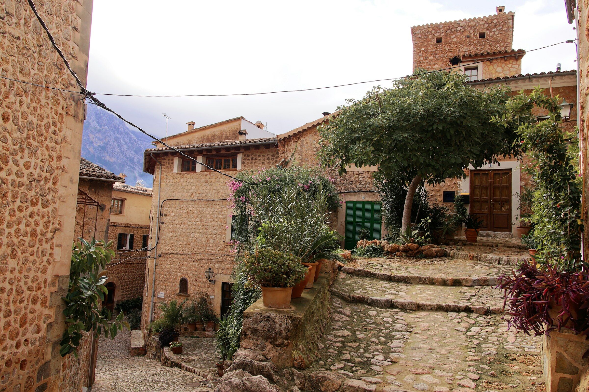

Mallorca Company Retreat Guide: Fincas, Villages and Coves
How to plan a company retreat in Mallorca: where to stay, the best areas, team activities, ideal seasons and what it costs per person, flights included.

Mallorca is far more than beaches. Inland, you find stone villages, olive groves and the Serra de Tramuntana mountains; along the coast, quiet coves and harbour towns. It's one of the best places in Europe to combine focused work with real time outside.
Why teams choose Mallorca
- Easy to reach: Palma airport has direct flights from most European cities.
- Venues with character: restored fincas, boutique hotels in old manor houses, exclusive-use estates.
- A long season: pleasant from March to early November.
- Variety: mountains, sea, culture and gastronomy within an hour.
Where to stay
Palma
A lively old town, a cathedral, a seafront promenade and many hotels with meeting rooms. Best for larger groups and city-style programmes.
The Tramuntana mountains (Sóller, Deià, Valldemossa)
Stone villages, terraced hillsides and stunning views. Ideal for leadership retreats and small teams who want calm.
The countryside (Pla de Mallorca)
Fincas surrounded by fields, often booked exclusively. Perfect for 15 to 40 people who want the place to themselves.
The east coast
Coves, coastal paths and sailing. Great for team-building retreats.

Team activities in Mallorca
- Sailing or a catamaran day along the coast.
- Hiking or e-biking in the Tramuntana.
- Paella cooking class with a local chef.
- Kayaking in the coves.
- Olive oil tasting on a working estate.
- A treasure hunt through Palma's old town.
See all our team-building activities.
A sample 3-day programme
Day 1: arrive at Palma by midday, transfer to a finca, opening session on the terrace, dinner in the courtyard. Day 2: morning workshops, afternoon e-bike ride to a mountain village, paella workshop in the evening. Day 3: a closing session with decisions and owners, a sailing trip, then departures.
When to go
- Best: April to June, September to October.
- Hot and busy: July and August, when prices peak.
- Quiet: November to February, when many hotels close but cities stay open.
Budget
For three nights with flights, expect roughly €1,400 to €2,400 per person, depending on season and venue. Exclusive-use fincas are often better value than hotels for groups under 40. Check your number with the budget calculator.
Let us plan it
We work with partner venues across the island, from exclusive fincas to boutique hotels. Discover Mallorca for retreats, then talk to our expert to receive 3 proposals with every participant's flight included.
Frequently asked questions
Is Mallorca good for a company retreat?
Yes. It combines easy flights, venues with character, mountains, coves and great food, with a season that runs from spring to autumn.
What is the best area of Mallorca for a team offsite?
The countryside fincas for privacy, the Tramuntana villages for calm leadership sessions, and Palma for larger groups.
How many people can a Mallorca finca host?
Most fincas host 15 to 40 people. For larger groups, boutique hotels in Palma or on the coast work better.
Let's plan your team's next retreat
Venue, programme, activities and every participant's flight, handled by one team. It starts with a call with our expert.
Keep reading
All articles
The Best Company Retreat Destinations in Europe
The best destinations in Europe for a company retreat or offsite, by type of team and budget: sun, surf, culture, nature and great value, with flight tips.

How to Choose an Offsite Venue: 10 Questions to Ask
The 10 questions to ask before booking a company retreat venue: meeting rooms, Wi-Fi, rooms, food, exclusivity, access, contracts and more.

25 Team-Building Activities Adults Actually Enjoy
Team-building activities that don't feel forced: outdoor adventures, food experiences, creative workshops and city games for company retreats of any size.